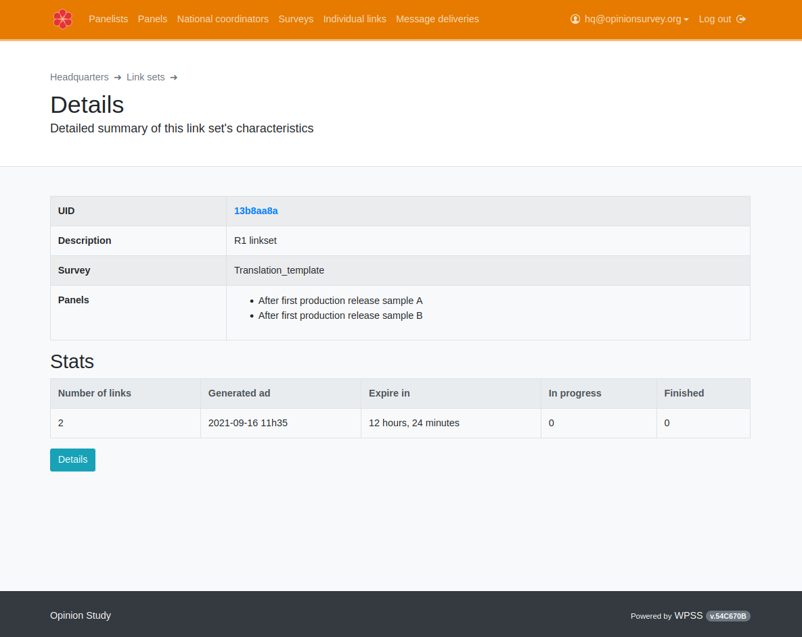

Inviting respondents
Inviting panelists🔗
Once all preliminary steps have been performed (checking messages and questionnaires availability and translations completeness), the study coordinator is able to invite sample(s) to answer a survey. To be able to intertwine emails and short text messages modes as well as to get one unique answer per panelist, we use individual links as our only way to invite respondents to answer a survey. This is done behind the scene trough the survey platform API.
Create a link set🔗
Once a questionnaire has been created and translated and the samples are ready to receive invitations, the next step will be to create a set of individual links. Select the Individual links card.

To trigger the link set creation, click on the green create button and fill in the form. You will have to select:
- the questionnaire
- all sample that the survey should be distributed to (using the
Ctrlbutton to allow multiple selection in thePanelsdrop-down list as shown below)

The newly created link set will appear in the list. To actually trigger the link set creation, click on the UID (first column, in blue).

You can check that the survey and the samples it will be published are accurate. Click now on Generate links:

Choose and expiration date, meaning the deadline after which all unused individual links to the survey will not allow panelists to answer anymore.


Inviting panelists to answer a survey🔗
When a link set is generated, every included panelist can see their individual link by logging into their account on the WPSS panelist portal.
However, it may be convenient to send an email or a text message to eligible panelists, drawing their attention on a new survey being available, and directly giving them the link they would otherwise find on their portal page.
This is exactly the purpose of Message Deliveries. For an existing individual link set, the message delivery procedure lets you choose a primary or preferred mode (email or SMS), a message template to use, a subset of panelists to target (eg, those who haven't started the survey yet) and schedule a sending date.
You can also optionaly add a fallback contact mode, that will be used to get in touch with panelists not reachable by the primary channel.

Let's distribute a survey, with email as primary mode. Click New email delivery:

You will have to choose:
- a link set (using its meaningful name and element UID)
- target recipients, in this case
All panelists, to target all panelists belonging to the sample you choosed for the link set. - For a reminder, you would typically choose
Not finished. For a thank you email, you would probably chooseFinished. - a message from the survey platdorm shared messages library that was created by a messages editor)


The message is in the process of being sent...
Sending reminders🔗
Once a linkset is created, the same linkset can be used as many time as desired to send reminders, using preferred principal mode and optional secondary (fallback) mode.
As an example, we will now send a reminder using primarily short text messages, only to panelists who either did not complete the survey or did not event start it.

Monitoring messages🔗
Messages are actually sent by the survey platform, that provides in return informations regarding the process. In WPSS, this information is displayed as statistics.
Emails🔗
Email messages statistics include the following items:
| Category | Notes |
|---|---|
Sent |
total emails sent |
Opened |
emails opened by recipient count |
Failed |
emails system failed to send count |
Bounced |
emails sent to inaccurate address and rejected |
Blocked |
emails the survey platform detected as duplicate message within one hour time interval |
Complaints |
how many recipient sent back a complaint |

The Details buttons provides this information at an individual panelist level.
Short text messages🔗
Short text messages statistics include the following items:
| Category | Notes |
|---|---|
SMS messages sent |
total recipients count |
SMS messages failed |
messages the survey platform failed to send |
Total messages |
parts count: depending on characters count and the encoding used, the message is transformed into a multipart messages |
Credits consumed |
total cost charged by the survey platform (using parts count) |